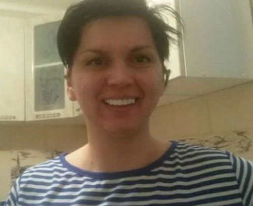

Una piccola e bella punta: Il sorriso di Hollywood senza andare dal dentista
Purtroppo, non tutti sono i fortunati possessori di denti perfetti. Le procedure dentali correttive che correggono i difetti dentali costano molto. Lo stesso si può dire delle protesi moderne.
Per fortuna siamo nel 21° secolo e al momento un bel sorriso non deve essere fatto con procedure costose e anche dolorose. Nel 2021 negli Stati Uniti d'America sono state create delle faccette rimovibili uniche chiamate Snap-On Smile.

Tali faccette permettono a chiunque di diventare istantaneamente il proprietario di uno splendido sorriso. Il nuovo prodotto unico Snap-On Smile è un dispositivo meraviglioso che combina le funzioni di faccette e di apparecchi dentali.
Il dispositivo è prodotto internamente con attrezzature di alta precisione utilizzando una tecnologia innovativa. Questo è un netto vantaggio rispetto alle altre faccette che sono fatte con metodi artigianali nei laboratori dentali convenzionali. L'installazione di una costruzione ultrasottile, forte e confortevole è possibile a casa.

Tale procedura è garantita come indolore e vi permetterà di mostrare il vostro bel sorriso bianco a chi vi circonda. Inoltre, l'uso regolare dello Snap-On Smile favorisce la correzione graduale del morso, l'allineamento efficace dei denti per analogia con i sistemi di apparecchi costosi.
Indossare un modello rimovibile è efficace per i seguenti problemi:
- Una mascella con denti irregolari, che crescono ad una distanza significativa;
- Denti mancanti e rotti;
- Piastre dentali scheggiate;
- Denti scoloriti;
- Presenza di vecchie otturazioni annerite;
- Malocclusione, denti che necessitano di allineamento;
- Una mascella con denti troppo piccoli.

I cuscinetti sono fatti di un materiale polimerico di alta qualità, che ha un alto grado di flessibilità.
L'apparecchio dentale elastico può essere di dimensioni universali. Ha le proprietà di una vestibilità sicura, adattandosi alla mascella di chi lo indossa.
L'apparecchio è caratterizzato da un'elevata forza e resistenza ai coloranti. Mangiare, bere vino rosso, tè nero, caffè e fumare non influenzerà l'aspetto delle faccette.

La costruzione ha una speciale capacità di adesione alla superficie del dente, che assicura un completo rifacimento dei denti. Una persona che indossa lo Snap-On Smile non prova disagio; smette di sentire le placche dopo 10 minuti che indossa le faccette.
Quali sono i vantaggi di scegliere Snap-On Smile?
- Le placche possono essere indossate da entrambi i sessi;
- Installazione facile e veloce a casa;
- Nessuna necessità di digrignare i denti prima del posizionamento;
- Nessun fastidio in bocca;
- Possibilità di mangiare o bere;
- Nessuna area annerita a causa di macchie di bevande o cibo;
- Immunità ai componenti attivi contenuti nel fumo di sigaretta;
- Prezzo ragionevole e alta qualità.

Punto importante!
Compra le faccette originali Snap-On Smile solo attraverso il modulo d'ordine ufficiale. Il mercato è pieno di falsi e copie di queste faccette. I truffatori vendono copie cinesi a buon mercato dello Snap-On Smile a prezzi allettanti.
Soprattutto per i lettori di Lifehacker racchiudiamo nell'articolo il modulo d'ordine ufficiale, compilando il quale si può tranquillamente acquistare il prodotto originale al 100% che soddisferà tutti i requisiti indicati.

Commenti ()
Chi ha provato queste faccette, sono davvero buone?
RispostaL'ho provato! Ho perso i miei denti anteriori a causa della mia partecipazione ad un combattimento. Il mio lavoro richiede un sorriso impeccabile, quindi comprare Snap On Smile è stata una vera salvezza per me. Ho ordinato attraverso il modulo d'ordine ufficiale. Il prezzo delle piastre era semplicemente ridicolo rispetto all'importo che è stato chiesto per lo specialista di protesi. Sono soddisfatta delle faccette - la mia bocca ha un aspetto decente, non ci sono sensazioni sgradevoli, nessun problema sul lavoro.
RispostaSono così) A causa dei rari, piccoli denti sani complessi. Grazie all'acquisto di faccette, sono stato finalmente in grado di mostrare un bel sorriso in ogni occasione. Fissare le faccette è facile. Quando sono messe, la mia mascella con loro ha un aspetto abbastanza naturale. Quando sorrido, ricevo i complimenti dai miei cari e dai colleghi. Vorrei aver comprato prima un dispositivo così prezioso.
RispostaQualcuno mi mandi una foto per favore!
RispostaEcco una foto, sembrano molto naturali)

RispostaMamma lavora nel settore sociale e ogni giorno è a contatto con la gente, quindi oltre all'aspetto impeccabile, ci dovrebbe essere anche un sorriso. Concorda con me che è difficile sorridere con denti problematici, anche in un momento in cui si prepara a sostituire il ponte e due protesi. Per farla sentire meno complessa, le abbiamo dato delle faccette rimovibili Snap-on-smile. La mamma ora ha un sorriso hollywoodiano abbagliante. Dice che è comodo mangiare nei piatti, sciacquare la bocca, non c'è assolutamente nessun disagio. Mia madre ha le faccette già da 1,5 mesi, durante questo tempo le placche non non si sono annerite, sono in perfetto stato. Lei è felice)
RispostaQueste faccette non sono male per migliorare il sorriso. È difficile discutere con questo. Ma non c'è bisogno di attribuire capacità intrinseche come la correzione della dentizione, la correzione del morso, e, inoltre, non è necessario confrontare le faccette in funzionalità con i sistemi di apparecchi ortodontici. Possono allineare, ma non con la stessa efficacia. Affermazioni non veritiere sulla correzione del morso servono solo come un'anti-pubblicità per un bel prodotto che è progettato per qualcosa di completamente diverso.
RispostaHo sentito parlare delle faccette rimovibili molto tempo fa - sono effettivamente una buona alternativa al costoso sbiancamento dei denti. Ma in qualche modo non ho deciso di acquistare, ma un mese fa ho deciso di ordinare le faccette rimovibili. Sono stati abbastanza veloci da raggiungermi, per cui voglio ringraziarvi. Sono stato molto soddisfatto della qualità, e ho ordinato attraverso il modulo d'ordine ufficiale. Ho installato queste faccette molto rapidamente, senza alcun problema. Si adattano molto bene, e non c'è alcun disagio in bocca. Tutto è semplicemente perfetto. Ed è abbastanza facile da rimuovere. Segni eccellenti!
RispostaLavoro nel settore pubblico e ogni giorno interagisco con un gran numero di persone. I miei denti sono il mio complesso fin dall'infanzia. I miei genitori non si sono preoccupati di sistemare i miei denti da latte, li hanno semplicemente argentati. Tutte le foto delle incontri che ho con i moncherini neri al posto dei denti, penso, sulle prese in giro dei miei coetanei non vale la pena parlarne. Ma i molari sono cresciuti e anche loro non mi piacevano: le zanne non si adattavano un po' e spostavano i due denti anteriori, il colore dello smalto è giallastro, in una parola, non un sorriso da Hollywood. Il mio dentista mi ha consigliato di usare le faccette rimovibili, è economico e il risultato è veloce, non come portare l'apparecchio per un anno, o anche due, e pagare un sacco di soldi. Ho deciso di sperimentare e da un anno le porto e sono soddisfatta dei miei denti: sono belli e bianchi, le faccette non danno fastidio ed è facile prendersene cura.
RispostaL'installazione di faccette reali - un piacere abbastanza costoso, non tutti possono permettersi, ma si scopre che c'è una buona alternativa - faccette rimovibili Snap-On Smile. Basta indossarle e il tuo sorriso diventa perfetto in un momento. Le faccette sono abbastanza comode, facili da mettere (ci vuole un po' per abituarsi all'inizio), ma sono abbastanza forti. In generale, non mi sono pentita di averle comprate, le indosserò fino a quando non metterò le faccette permanenti in clinica. A proposito, se indossate spesso Snap-On Smile, i denti diventano più uniformi, a giudicare dalla mia esperienza personale. Il prezzo è abbastanza accettabile, a mio parere, prendere nota
RispostaDimmi, per favore, queste faccette sono buone sui denti? Non cadono?
RispostaNo, non cadono, nessun problema)
RispostaSicuramente un vantaggio nel prezzo rispetto alle faccette permanenti. Si può ottenere un bel sorriso più bianco con denti dritti per una cifra relativamente bassa. Ma per qualche motivo ho sempre pensato che tali faccette rimovibili portano un gran fastidio in bocca a loro, come l'apparecchio per i denti, non ci si può abituare. Ma dicono che con l'usura regolare ci si abitua a loro e smettono di sentire in bocca, perché sono fatti di materiale di alta qualità che non interferisce. Ero anche confuso su come mangiare con queste faccette. Ma poi di nuovo, molte persone dicono che sono abbastanza comode e senza problemi. Dopotutto mi sto informando su di loro. È facile prendersi cura di queste faccette, inoltre i denti possono riposare temporaneamente. Ed è fantastico che non si scuriscano nel tempo a causa di cibi e bevande macchianti, che è fatto di materiale davvero buono.
RispostaI denti anteriori superiori ho da tempo delle otturazioni, li ho cambiati più di una volta, ma ancora, la discrepanza nel colore dei miei denti e delle otturazioni si vede. Ho deciso, finché non risparmio i soldi per corone permanenti di qualità, di comprare delle faccette rimovibili. Il prezzo è abbastanza accessibile. La qualità è buona. All'inizio non era molto comodo indossarle, ma mi sono abituato rapidamente. Le metto al lavoro. Non mi irritano le gengive e non ho problemi di dizione. Si adattano bene, non fanno pressione sui miei denti. Si possono indossare anche se manca un dente nella dentizione. Bevo tutti i tipi di bevande con loro, compresi succhi di frutta, caffè e tè - non si scuriscono. Sono facili da curare. Chi ha dubbi se comprare o no - lo consiglio.
RispostaLi ho ordinati io stessa. Si adattano molto bene, quindi non devo preoccuparmi che cadano nel momento più inopportuno. Hanno un aspetto molto naturale e non ti fanno sentire a disagio. Le indosso e il mio sorriso diventa immediatamente abbagliante. Fatte di un polimero di alta qualità, le faccette non si macchiano con il cibo e le bevande, e penso che dureranno a lungo.
RispostaOra hanno un tale sconto, solo il fuoco, ecco il modulo d'ordine ufficiale, 50% ho preso molto più costoso e quando l'azione non era...
Risposta